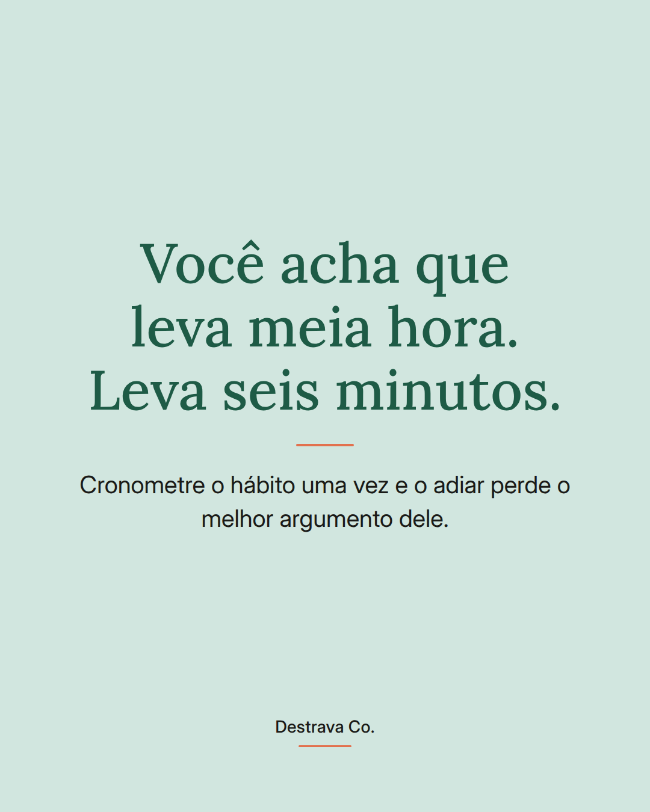
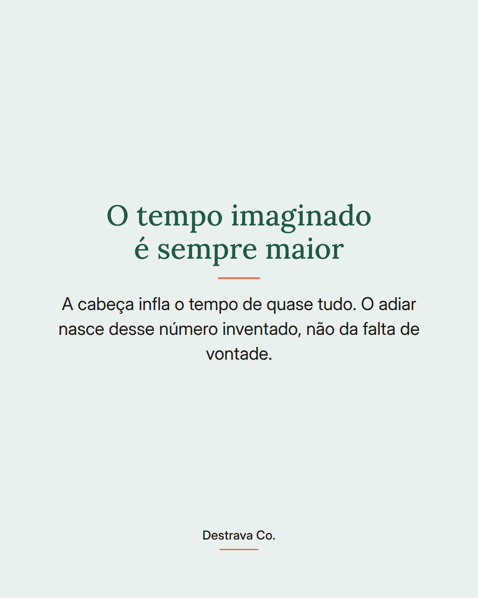
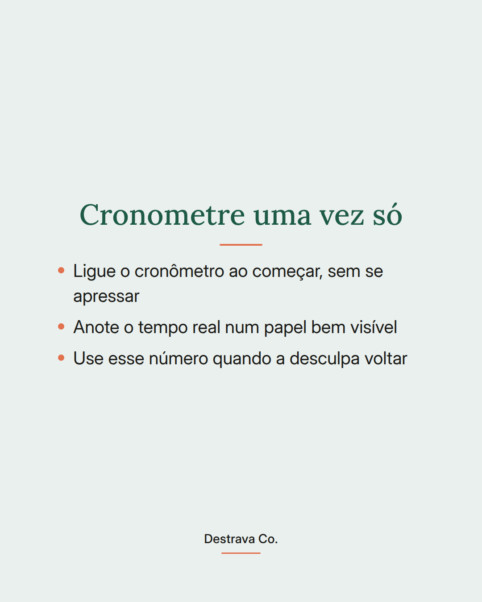
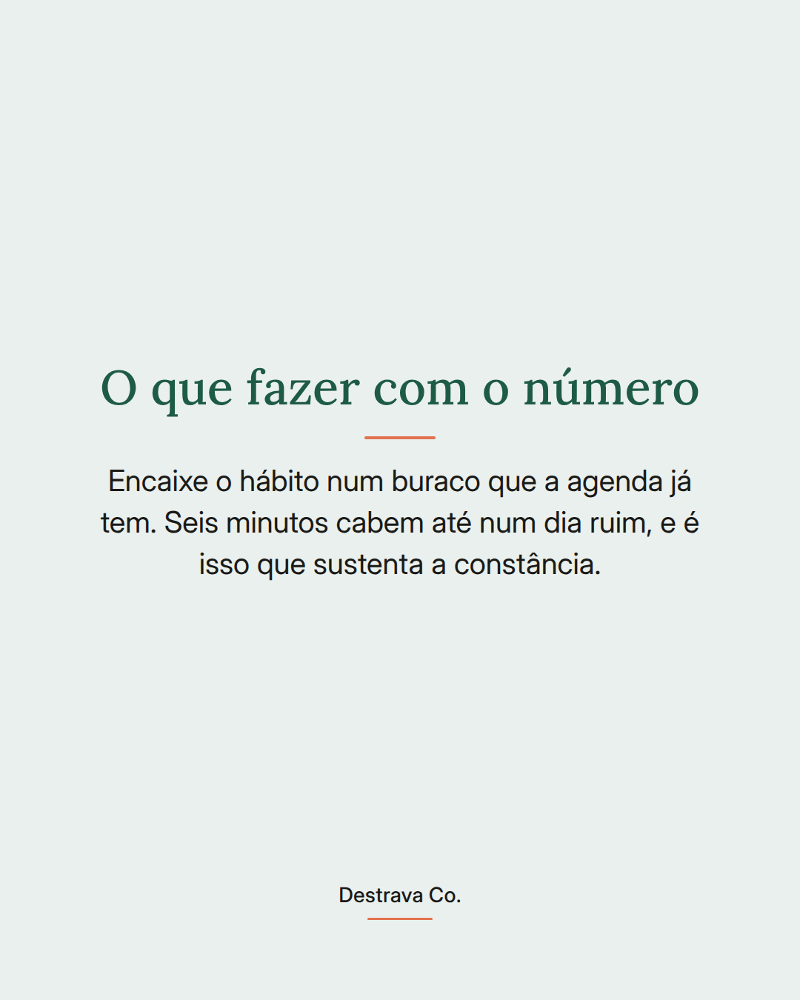
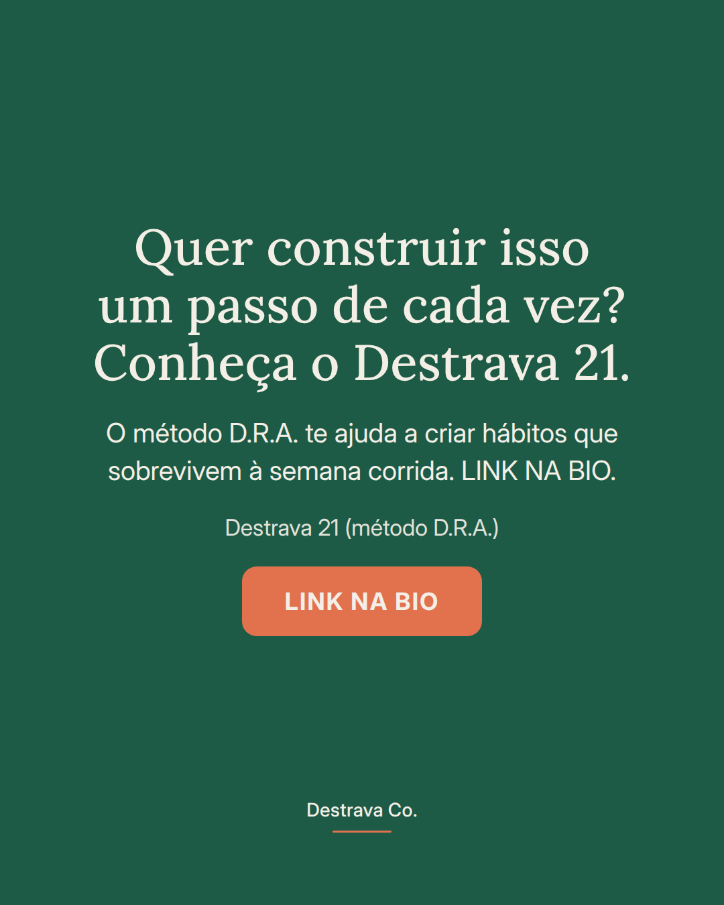
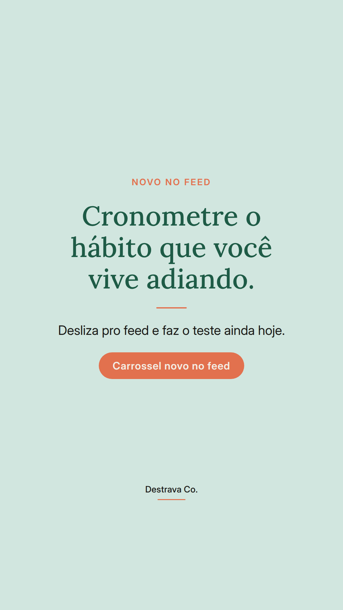
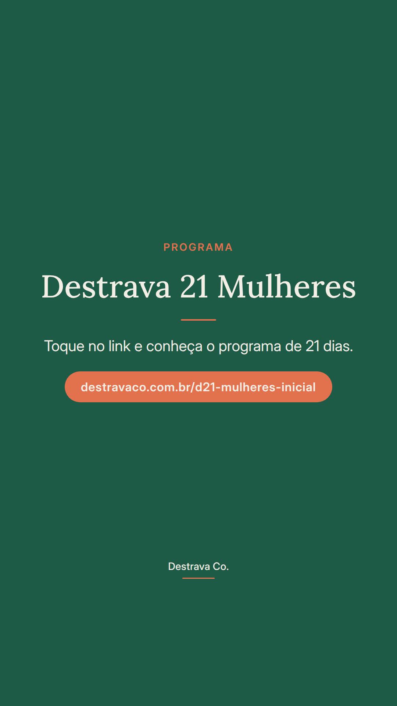

Cronometre o hábito que você vive adiando: ele provavelmente leva menos tempo do que a sua cabeça diz.
A gente não adia por preguiça. Adia por causa de um número inventado. Alongar parece meia hora. Caminhar na rua de casa parece um compromisso enorme. Quando você mede de verdade, costuma ser bem menos.
Faz o teste uma vez. Liga o cronômetro, faz no seu ritmo, anota o tempo real num lugar visível. Da próxima vez que a desculpa aparecer, você responde com um número concreto em vez de uma sensação.
Depois é só encaixar esse tempo num espaço que a sua rotina já tem. O que cabe no dia ruim é o que vira constância.
Salva pra lembrar no próximo dia corrido e manda pra uma amiga que também vive adiando. Se quiser fazer isso com acompanhamento, o Destrava 21 te espera na bio.